7 Principal Component and Factor Analyses
How many independent things are actually being measured?
| Theme of the practice | How many distinct dimensions does your angle really have? |
| Reading | Koopman & Mesters (2017), Empirical Bayes Methods for Dynamic Factor Models · article |
| Replication package | 10.7910/DVN/NKWMQM |
| Data | qmib.load("movies") — 45,000 films — budget, popularity, revenue, runtime and votes |
This is the last session examined by the midterm, written Wednesday 28 October 2026. Everything from Session 1 to here is examinable.
7.1 Before the session
How many independent things are actually being measured?
Open the pre-session slides · source:
MATH60033A-S07-Pre-Session.qmd
Two things to do before class, and they are the two halves of the practice. Budget 60–90 minutes.
| Before class | Used in the practice for | |
|---|---|---|
| 1 | Read the paper | reproducing one of its results |
| 2 | Get both datasets | that, and applying the method to your own angle |
7.1.1 1. The reading — 45–60 min
Koopman & Mesters (2017), Empirical Bayes Methods for Dynamic Factor Models Read the article
Read for the argument, not for coverage:
| What to look for | |
|---|---|
| 1 | The research question, in one sentence |
| 2 | The method or design, and why they chose it |
| 3 | The strongest single piece of evidence |
| 4 | One limitation you would raise as a referee |
Annotate as you go. You will be asked what you underlined and why.
7.1.2 2. The data — 10 min
You need two datasets in the practice, and both should be on your machine before you arrive.
7.1.2.1 a) The paper’s replication package
This is what you reproduce in the first twenty minutes of the practice.
Harvard Dataverse: 10.7910/DVN/NKWMQM
Download it once, and unzip it here — the folder is git-ignored, so nothing large is committed:
07-pca-and-factor-analysis/data/replication/Keep the authors’ own folder structure and README.
7.1.2.2 b) The course data, for your own angle
This is what you apply the method to in the second half.
import qmib
data = qmib.load("movies") # what the lecture uses
core = qmib.load("core") # shared by every group
mine = qmib.load("angle_c_country") # YOUR angle — see your dictionary
print(data.shape, core.shape, mine.shape)45,000 films — budget, popularity, revenue, runtime and votes.
Run this before class. It downloads once and caches as parquet, so the practice works whatever the room’s wifi is doing.
qmib.catalog()lists everything available.
Your group’s file, columns, units and traps are in your data dictionary.
7.1.3 3. Self-check — 15 min
Answer on paper. If you cannot, that is what the lecture is for.
- In one sentence: what does this session’s method let you claim that the previous one did not?
- What must be true of your data for it to apply?
- Which claim in the paper rests on this method — and how hard does it lean on it?
7.1.4 Arrive with
7.2 The lecture
Delivered from the slides. What follows is the same material as prose.
"If you live 5 minutes away from Bill Gates, I bet you are rich."
Al-Eryani, Mohammad F. "Transfer Pricing Determinants of U.S. Multinationals", Journal of International Business Studies, vol. 21, no. 3 ISSN: 0047-2506
7.3 Outline
7.4 outline
Introduction
Principal Component Analysis
Factor Analysis
Applications
The Netflix Recommender System
FAMD: The Wine Data
Factor Analysis for Questionnaires
- Comparison and Interpretation: When to Use PCA vs. Factor Analysis
7.5 Introduction
7.6 Introduction
| Color (nm) | Alcohol (%) | Beer or Wine? |
|---|---|---|
| 610 | 5 | Beer |
| 599 | 13 | Wine |
| 693 | 14 | Wine |
Labels
training / testing
supervised / unsupervised (or self-supervised) / reinforcement learning
System 1 (fast, intuitive) / System 2 (slow, analytical) (D. Kahneman)
![](https://github.com/warint/quantitative-methods/blob/main/.png)
![](https://github.com/warint/quantitative-methods/blob/main/.png)
7.7 Introduction
Gathering data
Pre-processing
Choosing a model
Training the model / K-fold cross-validation
Evaluation
Hyper-parameter tuning
Out-of-sample Prediction
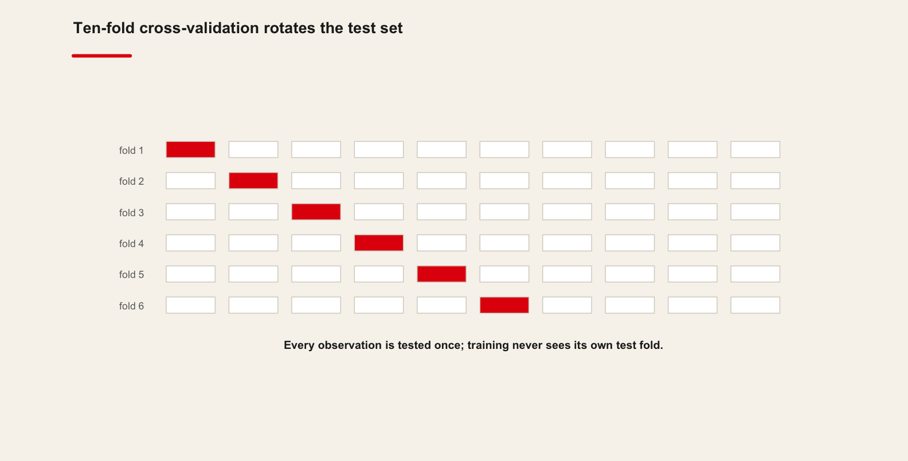
7.8 Introduction
- A set of principles that can be applied to regression or classification
What is the difference between regression and classification models?
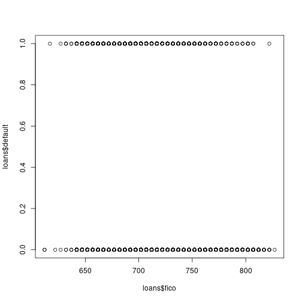
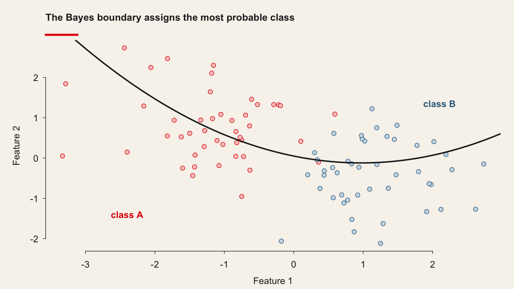
7.9 Introduction
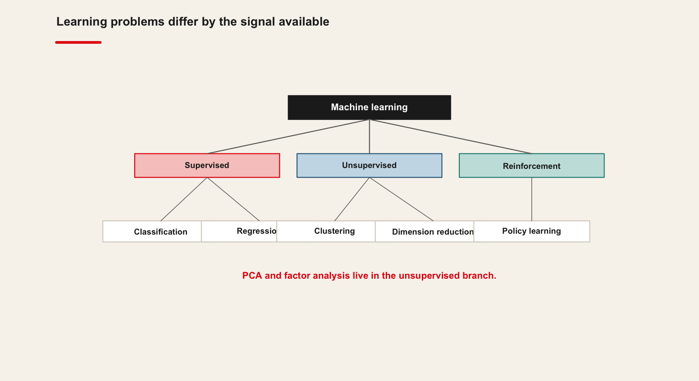
7.10 Multivariate statistics
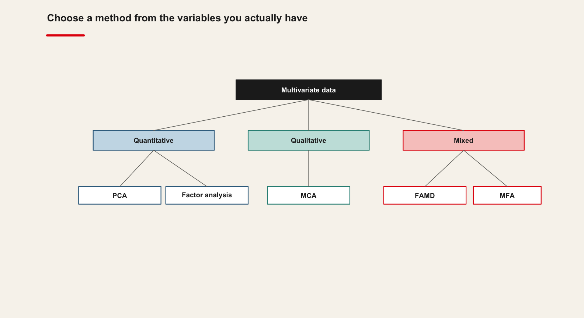
Multivariate Statistics is a group of statistical methods that focus on studying multiple variables together while focusing on the variation that those variables have in common.
Definition: Multivariate Statistics deals with the treatment of data sets with a large number of dimensions.
Its goals are therefore different from supervised modeling, but also different from segmentation and clustering models.
There are many models in the family of Multivariate Statistics.
- PCA
- Factor Analysis
7.11 Principal Component Analysis
7.12 Principal Component Analysis
Interesting book: https://shainarace.github.io/LinearAlgebra/pca.html
7.13 Principal Component Analysis
Modern datasets often have a very large number of variables. This makes it difficult to inspect each of the variables individually, due to the practical fact that the human mind cannot easily digest data on such a large scale.
When a dataset contains a large number of variables, there is often a serious amount of overlap between those variables.
The components that are found by PCA are ordered from the highest information content to the lowest information content.
PCA is a statistical method that allows you to “regroup” your variables into a smaller number of variables, called components.
This regrouping is done based on variation that is common to multiple variables.
7.14 Principal Component Analysis
The goal of PCA is to regroup variables in such a way that the first (newly created) component contains a maximum of variation.
- The second component contains the second-largest amount of variation, etc.
The last component logically contains the smallest amount of variation.
Thanks to this ordering of components, it is made possible to retain only a few of the newly created components, while still retaining a maximum amount of variation.
We can then use the components rather than the original variables for data exploration.
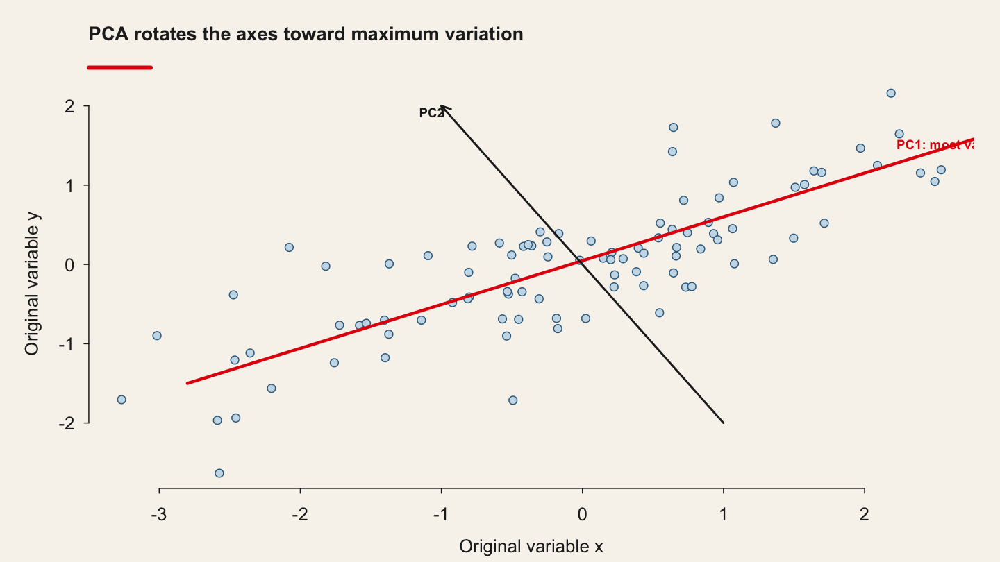
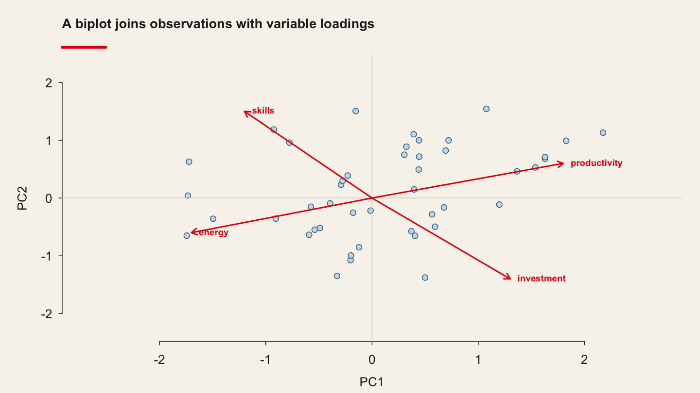
The mathematical definition of the PCA problem is to find a linear combination of the original variables with maximum variance.
This means that we are going to create a (new) component. Let’s call it \(z\). This z is going to be computed based on our original variables \((X_1, X_2, ...)\) multiplied by a weight for each of our variables \((u_1, u_2, ...)\).
This can be written as \(z = Xu\).
[We apply it to cross-section data. For time-series cross-section data, we can use the superPCA package. Not exam material!]
7.15 Mathematical Model — Maximize variance of the new components
The mathematical goal is to find the values for \(u\) that will maximize the variance of \(z\), with a constraint of unit length on \(u\).
This problem is mathematically called a constrained optimization using Lagrange Multiplier, but in practice, we use computers to do the whole PCA operation at once.
This can also be described as applying matrix decomposition to the correlation matrix of the original variables.
PCA is efficient in finding the components that maximize variance.
This is great if we are interested in reducing the number of variables while keeping a maximum of variance.
Sometimes, however, we are not purely interested in maximizing variance: we might want to give the most useful interpretations to our newly defined dimensions.
And this is not always easiest with the solution found by a PCA.
We can then apply Factor Analysis: an alternative to PCA that has a little bit more flexibility.
PCA only works with numeric data
Categorical data must be encoded as numeric data (e.g. "one-hot encoding techniques" = creating dummies from factors, see fastDummies package in R)
Numeric data must be scaled (otherwise your PCA will be misleading)
7.16 The Netflix's Recommender System through a PCA
7.17 Netflix's Recommender System
These files contain metadata for all 45,000 movies listed in the Full MovieLens Dataset. The dataset consists of movies released on or before July 2017.
Data points include cast, crew, plot keywords, budget, revenue, posters, release dates, languages, production companies, countries, TMDB vote counts and vote averages.
# In the VS Codium terminal, with .venv active:
# pip install scikit-learn prince
import qmib
import numpy as np
import pandas as pdStep 1: Collecting the data
movies = qmib.load("movies")
# Keep the numeric columns and drop rows with holes
df = movies[["budget", "popularity", "revenue", "runtime",
"vote_average", "vote_count"]].dropna()
df.head()## # A tibble: 6 × 6
## budget popularity revenue runtime vote_average vote_count
## <dbl> <dbl> <dbl> <dbl> <dbl> <dbl>
## 1 30000000 21.9 373554033 81 7.7 5415
## 2 65000000 17.0 262797249 104 6.9 2413
## 3 0 11.7 0 101 6.5 92
## 4 16000000 3.86 81452156 127 6.1 34
## 5 0 8.39 76578911 106 5.7 173
## 6 60000000 17.9 187436818 170 7.7 18867.18 Netflix's Recommender System
Step 2: Computing the principal components
from sklearn.decomposition import PCA
from sklearn.preprocessing import StandardScaler
# PCA is scale-dependent: standardise first, always.
Z = StandardScaler().fit_transform(df)
res_pca = PCA().fit(Z)Extract eigenvalues/variances:
# Eigenvalues and the variance each component explains
eig = pd.DataFrame({
"eigenvalue": res_pca.explained_variance_,
"pct_variance": res_pca.explained_variance_ratio_ * 100,
"cumulative_pct": np.cumsum(res_pca.explained_variance_ratio_) * 100,
}, index=[f"PC{i+1}" for i in range(len(res_pca.explained_variance_))])
print(eig.round(2))## eigenvalue variance.percent cumulative.variance.percent
## Dim.1 2.9648202 49.413669 49.41367
## Dim.2 1.1123203 18.538672 67.95234
## Dim.3 0.8495029 14.158382 82.11072
## Dim.4 0.5969400 9.949000 92.05972
## Dim.5 0.3121479 5.202466 97.26219
## Dim.6 0.1642686 2.737811 100.00000import matplotlib.pyplot as plt
# Scree plot: where does the curve flatten?
plt.bar(range(1, len(res_pca.explained_variance_ratio_) + 1),
res_pca.explained_variance_ratio_ * 100)
plt.xlabel("Component"); plt.ylabel("% of variance")
plt.show()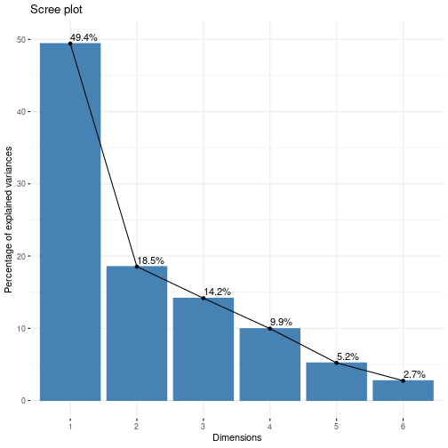
7.19 Netflix's recommender System
Step 3: Which variables contribute to the principal components?
Extract the results for variables
# The loadings: how each variable relates to each component
loadings = pd.DataFrame(
res_pca.components_.T * np.sqrt(res_pca.explained_variance_),
index=df.columns, columns=[f"PC{i+1}" for i in range(res_pca.n_components_)])
print(loadings.round(3))## Principal Component Analysis Results for variables
## ===================================================
## Name Description
## 1 "$coord" "Coordinates for the variables"
## 2 "$cor" "Correlations between variables and dimensions"
## 3 "$cos2" "Cos2 for the variables"
## 4 "$contrib" "contributions of the variables"# Coordinates of the variables on the first two components
print(loadings[["PC1", "PC2"]].round(3))## Dim.1 Dim.2 Dim.3 Dim.4 Dim.5
## budget 0.8522103 -0.13304377 0.07422541 -0.271273387 0.40273289
## popularity 0.7161100 0.06520202 -0.10264410 0.678737307 0.10574635
## revenue 0.9098097 -0.16064597 0.01395941 -0.190795959 -0.10578536
## runtime 0.2218354 0.70334681 0.67473039 -0.004130231 -0.02787541
## vote_average 0.2012077 0.74767729 -0.61399549 -0.152273281 0.01639361
## vote_count 0.8990523 -0.10413067 -0.03180020 -0.055309149 -0.35571834# Contribution of each variable to each component, in percent
contrib = (loadings ** 2)
contrib = contrib / contrib.sum() * 100
print(contrib.round(2))## Dim.1 Dim.2 Dim.3 Dim.4 Dim.5
## budget 24.496003 1.5913261 0.64854535 12.327746737 51.9605486
## popularity 17.296617 0.3822014 1.24023256 77.174311867 3.5823690
## revenue 27.919188 2.3201164 0.02293871 6.098284291 3.5850123
## runtime 1.659829 44.4743043 53.59147040 0.002857709 0.2489328
## vote_average 1.365497 50.2572249 44.37777244 3.884335489 0.0860971
## vote_count 27.262866 0.9748269 0.11904054 0.512463908 40.5370401# Variable plot: arrows on the unit circle, coloured by contribution
fig, ax = plt.subplots(figsize=(5.5, 5.5))
for name, (x, y) in loadings[["PC1", "PC2"]].iterrows():
ax.arrow(0, 0, x, y, head_width=.02, color="#356B8C")
ax.text(x * 1.08, y * 1.08, name, fontsize=9)
ax.add_patch(plt.Circle((0, 0), 1, fill=False, color="#B8C0CA"))
ax.set_xlim(-1.1, 1.1); ax.set_ylim(-1.1, 1.1)
ax.set_xlabel("PC1"); ax.set_ylabel("PC2")
plt.show()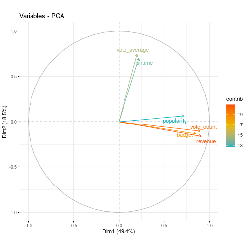
contrib["PC1"].sort_values(ascending=False).head(10).plot.bar()
plt.ylabel("% contribution to PC1"); plt.show()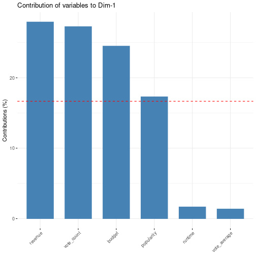
contrib["PC2"].sort_values(ascending=False).head(10).plot.bar()
plt.ylabel("% contribution to PC2"); plt.show()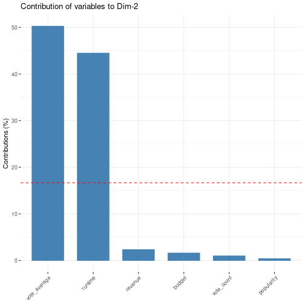
Step 4: Which "variables"individuals" contribute to the principal components?
# The scores: where each film sits in the new coordinate system
scores = pd.DataFrame(res_pca.transform(Z)[:, :5],
columns=[f"PC{i+1}" for i in range(5)])
scores.describe().round(3)## Principal Component Analysis Results for individuals
## ===================================================
## Name Description
## 1 "$coord" "Coordinates for the individuals"
## 2 "$cos2" "Cos2 for the individuals"
## 3 "$contrib" "contributions of the individuals"scores.head().round(3)## Dim.1 Dim.2 Dim.3 Dim.4 Dim.5
## 1 10.7468471 -1.3765037 -1.49270196 -0.1115660 -6.2270208
## 2 7.3279480 -0.7093316 -0.33807210 -0.5969450 -0.7600249
## 3 0.4544490 0.5957983 -0.35789264 1.3256214 0.1630035
## 4 1.0356193 0.5232758 0.52046056 -0.4126039 0.3728671
## 5 0.9074839 0.1562641 0.08868175 0.6146029 -0.2909026
## 6 6.3403964 1.0646766 0.62588178 -0.0882128 -0.1072013Code
# Individuals plotted on the first two components
plt.scatter(scores["PC1"], scores["PC2"], s=4, alpha=.3)
plt.xlabel("PC1"); plt.ylabel("PC2")
plt.show()Output
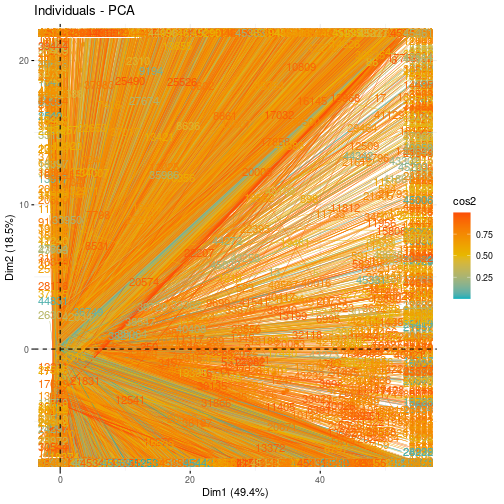
Code
# Biplot: individuals as points, variables as arrows
fig, ax = plt.subplots(figsize=(6.5, 5.5))
ax.scatter(scores["PC1"], scores["PC2"], s=4, alpha=.2)
scale = 4
for name, (x, y) in loadings[["PC1", "PC2"]].iterrows():
ax.arrow(0, 0, x * scale, y * scale, head_width=.08, color="#E3120B")
ax.text(x * scale * 1.1, y * scale * 1.1, name, fontsize=9, color="#E3120B")
ax.set_xlabel("PC1"); ax.set_ylabel("PC2")
plt.show()Output
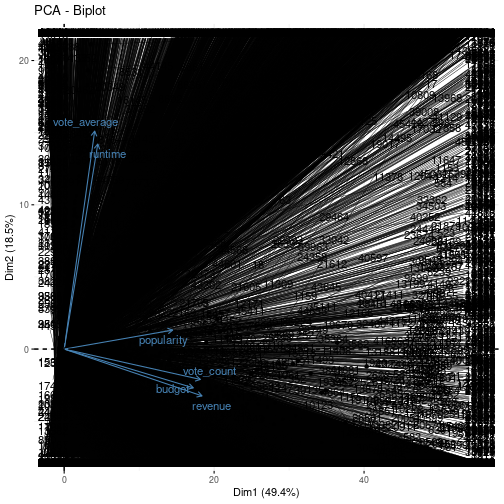
7.20 Factor analysis
7.21 Factor analysis
Just like PCA, Factor Analysis is also a model that allows reducing information in a larger number of variables into a smaller number of variables. In Factor Analysis we call those latent variables.
Definition: Factor Analysis tries to find latent variables that make sense to us. We can rotate the solution until we find latent variables that have a clear interpretation and “make sense”.
Factor Analysis is based on a model called the common factor model. It starts from the principle that there a certain number of factors in a data set, and that each of the measured variables captures a part of one or more of those factors.
We could imagine having students who are overall good in languages, but bad in technical subjects. In this case, we could try to find a latent variable for language ability and a second latent variable for technical ability.
We now have latent variables that measure the general ability of a student for Language and Technical subjects. But it would still be possible that some students are great at languages overall, but that they are just bad at German.
This is why the Common Factor Model has specific factors: they measure the impact of one specific measured variable on the measured variable.
We could describe it as “Ability for learning German while taking into account the general ability for learning languages”.
Where the PCA model is more of a pragmatic approach, in Factor Analysis we are hypothesizing that latent variables exist.
In a case with two latent variables, we can compute our original variables \(X\) by attributing one part of its variation to our first common latent variable (let’s call it \(k_1\)), part to the second common latent variable (\(k_2\)), and part to a specific factor (specific to this variable; called \(d\)).
In a case with 4 original variables, the Factor Analysis model would be as follows:
$$X_1 = c_{11} * k_1 + c_{12} * k_2 + d_1$$
$$X_2 = c_{21} * k_1 + c_{22} * k_2 + d_2$$
$$X_3 = c_{31} * k_1 + c_{32} * k_2 + d_3$$
$$X_4 = c_{41} * k_1 + c_{42} * k_2 + d_4$$
\(c\) are each coefficient of the coefficient matrix, which are the values that we need to estimate.
7.22 Two examples : the wine data and the cars questionnaire
7.23 FAMD: the wine data
7.24 FAMD: the wine data
# FAMD — factor analysis of mixed (numeric and categorical) data.
# pip install prince
import prince
wine = qmib.load("redwines")
wine["quality_label"] = np.where(wine["good"] == 1, "good", "ordinary")
famd = prince.FAMD(n_components=5, random_state=0).fit(wine)## Label Soil Odor.Intensity.before.shaking
## 2EL Saumur Env1 3.074
## 1CHA Saumur Env1 2.964
## 1FON Bourgueuil Env1 2.857
## 1VAU Chinon Env2 2.808
## 1DAM Saumur Reference 3.607
## 2BOU Bourgueuil Reference 2.857
## Aroma.quality.before.shaking Fruity.before.shaking Flower.before.shaking
## 2EL 3.000 2.714 2.280
## 1CHA 2.821 2.375 2.280
## 1FON 2.929 2.560 1.960
## 1VAU 2.593 2.417 1.913
## 1DAM 3.429 3.154 2.154
## 2BOU 3.111 2.577 2.040
## Spice.before.shaking Visual.intensity Nuance Surface.feeling
## 2EL 1.960 4.321 4.000 3.269
## 1CHA 1.680 3.222 3.000 2.808
## 1FON 2.077 3.536 3.393 3.000
## 1VAU 2.160 2.893 2.786 2.538
## 1DAM 2.040 4.393 4.036 3.385
## 2BOU 2.077 4.464 4.259 3.407
## Odor.Intensity Quality.of.odour Fruity Flower Spice Plante Phenolic
## 2EL 3.407 3.308 2.885 2.320 1.840 2.000 1.650
## 1CHA 3.370 3.000 2.560 2.440 1.739 2.000 1.381
## 1FON 3.250 2.929 2.769 2.192 2.250 1.750 1.250
## 1VAU 3.160 2.880 2.391 2.083 2.167 2.304 1.476
## 1DAM 3.536 3.360 3.160 2.231 2.148 1.762 1.600
## 2BOU 3.179 3.385 2.800 2.240 2.148 1.750 1.476
## Aroma.intensity Aroma.persistency Aroma.quality Attack.intensity Acidity
## 2EL 3.259 2.963 3.200 2.963 2.107
## 1CHA 2.962 2.808 2.926 3.036 2.107
## 1FON 3.077 2.800 3.077 3.222 2.179
## 1VAU 2.542 2.583 2.478 2.704 3.179
## 1DAM 3.615 3.296 3.462 3.464 2.571
## 2BOU 3.214 3.148 3.321 3.286 2.393
## Astringency Alcohol Balance Smooth Bitterness Intensity Harmony
## 2EL 2.429 2.500 3.250 2.731 1.926 2.857 3.143
## 1CHA 2.179 2.654 2.926 2.500 1.926 2.893 2.964
## 1FON 2.250 2.643 3.321 2.679 2.000 3.074 3.143
## 1VAU 2.185 2.500 2.333 1.680 1.963 2.462 2.038
## 1DAM 2.536 2.786 3.464 3.036 2.071 3.643 3.643
## 2BOU 2.643 2.857 3.286 2.857 2.179 3.464 3.500
## Overall.quality Typical
## 2EL 3.393 3.250
## 1CHA 3.214 3.036
## 1FON 3.536 3.179
## 1VAU 2.464 2.250
## 1DAM 3.741 3.444
## 2BOU 3.643 3.393# Eigenvalues of the FAMD dimensions
print(famd.eigenvalues_summary)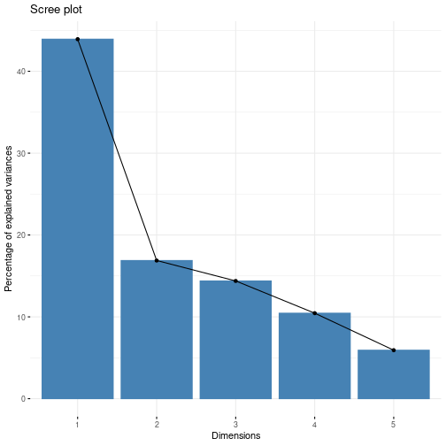
# Variable coordinates
print(famd.column_coordinates_(wine).round(3).head(12))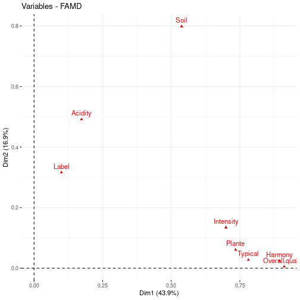
# Just the quantitative variables
num_cols = [c for c in wine.columns if c not in ("quality_label",)]
print(famd.column_coordinates_(wine).loc[num_cols].round(3))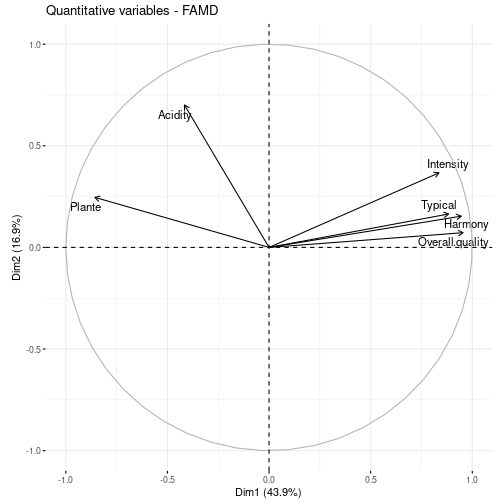
# Just the qualitative variable
print(famd.column_coordinates_(wine).drop(index=num_cols).round(3))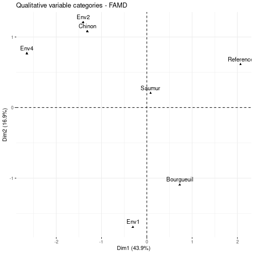
# Individuals, coloured by how well they are represented
coords = famd.row_coordinates(wine)
plt.scatter(coords[0], coords[1], s=6, alpha=.35,
c=wine["good"], cmap="RdYlBu_r")
plt.xlabel("Dim 1"); plt.ylabel("Dim 2")
plt.show()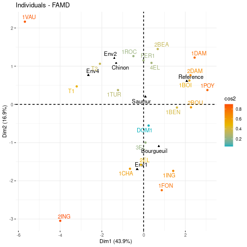
7.25 Factor Analysis for Questionnaires
7.26 Factor Analysis for Questionnaires
# Exploratory factor analysis
# pip install factor_analyzer
from factor_analyzer import FactorAnalyzer
data = qmib.load("efa")
data.head()## # A tibble: 6 × 14
## Price Safety Exterior_Looks Space_comfort Technology After_Sales_Service
## <dbl> <dbl> <dbl> <dbl> <dbl> <dbl>
## 1 4 4 5 4 3 4
## 2 3 5 3 3 4 4
## 3 4 4 3 4 5 5
## 4 4 4 4 3 3 4
## 5 5 5 4 4 5 4
## 6 4 4 5 3 4 5
## # ℹ 8 more variables: Resale_Value <dbl>, Fuel_Type <dbl>,
## # Fuel_Efficiency <dbl>, Color <dbl>, Maintenance <dbl>, Test_drive <dbl>,
## # Product_reviews <dbl>, Testimonials <dbl>7.27 Factor Analysis for Questionnaires
# How many factors? A scree plot of the eigenvalues.
fa = FactorAnalyzer(rotation=None).fit(data)
ev, _ = fa.get_eigenvalues()
plt.plot(range(1, len(ev) + 1), ev, "o-")
plt.axhline(1, color="red", ls="--") # Kaiser criterion
plt.xlabel("Factor"); plt.ylabel("Eigenvalue")
plt.show()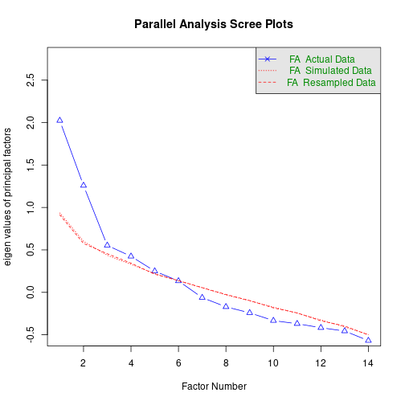
## Parallel analysis suggests that the number of factors = 4 and the number of components = NAthreefactor = FactorAnalyzer(n_factors=3, rotation="oblimin", method="minres").fit(data)
loadings3 = pd.DataFrame(threefactor.loadings_, index=data.columns,
columns=["MR1", "MR2", "MR3"])
print(loadings3.round(3))##
## Loadings:
## MR1 MR2 MR3
## Price 0.444
## Safety 0.311
## Exterior_Looks
## Space_comfort 0.832
## Technology 0.342
## After_Sales_Service 0.460
## Resale_Value 0.599
## Fuel_Type 0.573
## Fuel_Efficiency 0.655
## Color 0.464
## Maintenance 0.668
## Test_drive 0.328
## Product_reviews 0.424
## Testimonials 0.742
##
## MR1 MR2 MR3
## SS loadings 2.015 1.605 0.972
## Proportion Var 0.144 0.115 0.069
## Cumulative Var 0.144 0.259 0.328fourfactor = FactorAnalyzer(n_factors=4, rotation="oblimin", method="minres").fit(data)
loadings4 = pd.DataFrame(fourfactor.loadings_, index=data.columns,
columns=["MR1", "MR2", "MR3", "MR4"])
# Hide the small loadings so the structure is readable
print(loadings4.round(3).where(loadings4.abs() > 0.3, ""))## Factor Analysis using method = minres
## Call: fa(r = data, nfactors = 4, rotate = "oblimin", fm = "minres")
## Standardized loadings (pattern matrix) based upon correlation matrix
## MR1 MR2 MR4 MR3 h2 u2 com
## Price 0.54 0.12 -0.08 -0.05 0.30 0.70 1.2
## Safety -0.33 0.36 0.11 -0.25 0.23 0.77 3.0
## Exterior_Looks 0.12 0.07 -0.55 0.28 0.34 0.66 1.6
## Space_comfort -0.04 0.78 -0.13 0.08 0.67 0.33 1.1
## Technology 0.01 0.36 0.06 0.02 0.13 0.87 1.1
## After_Sales_Service 0.10 0.54 0.18 -0.05 0.33 0.67 1.3
## Resale_Value 0.73 -0.14 -0.02 -0.16 0.57 0.43 1.2
## Fuel_Type 0.01 0.57 -0.01 -0.12 0.32 0.68 1.1
## Fuel_Efficiency 0.43 0.23 0.31 0.16 0.47 0.53 2.7
## Color 0.07 -0.06 0.73 0.13 0.61 0.39 1.1
## Maintenance 0.56 0.08 0.21 0.01 0.44 0.56 1.3
## Test_drive 0.11 0.16 0.01 0.36 0.20 0.80 1.6
## Product_reviews 0.34 0.15 0.05 0.36 0.32 0.68 2.4
## Testimonials -0.19 -0.01 0.06 0.68 0.51 0.49 1.2
##
## MR1 MR2 MR4 MR3
## SS loadings 1.69 1.65 1.10 0.98
## Proportion Var 0.12 0.12 0.08 0.07
## Cumulative Var 0.12 0.24 0.32 0.39
## Proportion Explained 0.31 0.30 0.20 0.18
## Cumulative Proportion 0.31 0.62 0.82 1.00
##
## With factor correlations of
## MR1 MR2 MR4 MR3
## MR1 1.00 0.05 0.27 0.00
## MR2 0.05 1.00 -0.02 0.21
## MR4 0.27 -0.02 1.00 0.12
## MR3 0.00 0.21 0.12 1.00
##
## Mean item complexity = 1.6
## Test of the hypothesis that 4 factors are sufficient.
##
## df null model = 91 with the objective function = 2.97 0.3 with Chi Square = 247.71
## df of the model are 41 and the objective function was 0.57
## 0.3
## The root mean square of the residuals (RMSR) is 0.05
## The df corrected root mean square of the residuals is 0.07
## 0.3
## The harmonic n.obs is 90 with the empirical chi square 38.46 with prob < 0.58
## 0.3The total n.obs was 90 with Likelihood Chi Square = 46.2 with prob < 0.27
## 0.3
## Tucker Lewis Index of factoring reliability = 0.922
## RMSEA index = 0.036 and the 90 % confidence intervals are 0 0.085 0.3
## BIC = -138.29
## Fit based upon off diagonal values = 0.94
## Measures of factor score adequacy
## MR1 MR2 MR4 MR3
## Correlation of (regression) scores with factors 0.87 0.88 0.84 0.80
## Multiple R square of scores with factors 0.76 0.77 0.70 0.64
## Minimum correlation of possible factor scores 0.51 0.55 0.40 0.287.28 Factor Analysis for Questionnaires
# The same loadings, read as a diagram: each item under the factor it loads on
for j, col in enumerate(loadings4.columns):
items = loadings4.index[loadings4[col].abs() > 0.3].tolist()
print(f"{col}: " + ", ".join(items))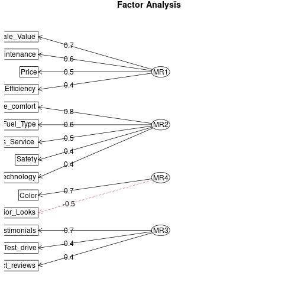
7.29 Factor Analysis for Questionnaires

Naming the factors:
MR1 = Economic value
MR2 = Functional benefits
MR3 = Credibility
MR4 = Aesthetics
7.30 When to use PCA and when to use Factor Analysis?
PCA allows us to find the components that contain the maximum amount of information in fewer variables. This makes it a great tool for dimension reduction.
PCA on the other hand is used in cases where we want to retain the largest amount of variation in the smallest number of variables possible.
PCA is much used in data preparation for Machine Learning tasks, where we want to help the Machine Learning model by already “summarising” the data in an easier to digest form.
Then as a consequence, the mathematics behind the two methods are, while close to each other, not exactly the same. Although both methods use decomposition, they differ in the details.
This also causes the fact that Factor Analysis has an additional possibility for rotation of the final solution, while PCA does not. Different Applications
As Factor Analysis is more flexible for interpretation, due to the possibility of rotation of the solution, it is very valuable in studies for marketing and psychology.
PCA’s advantage is that it allows for dimension reduction while still keeping a maximum amount of information in a data set. This is often used to simplify exploratory analyses or to prepare data for Machine Learning pipelines.
7.31 In the practice
7.31.1 Principal Component and Factor Analyses
Open the practice slides · source:
MATH60033A-S07-Practice.qmd
7.31.1.1 The theme of this session
8 How many distinct dimensions does your angle really have?
All ten groups attack this question, each on its own project, and the last twenty minutes assemble the answers.
8.0.0.1 What you are doing
The lecture showed the method on the session’s dataset. You now apply it to your own angle, and to the question your group is actually trying to answer (RESEARCH-MANDATES.md).
The deliverable is not a printout. It is a decision, with the reason written down.
8.0.0.2 Before you start
Everyone in the group pushes at least once this session. Replace XX with your group number — group 07 uses group-07.
git checkout -b group-XX
mkdir -p 07-pca-and-factor-analysis/02-practice/submissions/group-XX8.0.0.3 1 · Reproduce one result from the paper — 20 min
Take the result the pre-session reading rests on, and reproduce it — or establish that you cannot, and say precisely where it breaks. A failed reproduction that is diagnosed earns full marks; one that is not attempted earns none.
The paper is Koopman & Mesters (2017), Empirical Bayes Methods for Dynamic Factor Models, and its replication package (10.7910/DVN/NKWMQM) should already be unzipped at:
07-pca-and-factor-analysis/data/replication/The session’s own dataset, for comparison:
import qmib
data = qmib.load("movies")8.0.0.4 2 · Apply the method to your own angle — 35 min
core = qmib.load("core")
mine = qmib.load("angle_c_country") # your angle — see your dictionary
df = core.merge(mine, on=["geo", "time"], how="inner")Fit the session’s method on your own data. Report what the lecture said to report, in the units of your own variables.
8.0.0.5 3 · Break one assumption — 15 min
Every method in this course rests on something. Find the assumption this one rests on hardest, break it deliberately, and record what happened to your answer. This is the part that carries the marks.
8.0.0.6 4 · Write it down — 20 min
A 250-word note in your submissions folder:
- What you found, in units
- Which assumption you broke, and what it did
- What this result does not license you to claim
8.0.0.7 Submitting
git add 07-pca-and-factor-analysis/02-practice/submissions/group-XX
git commit -m "Session 07 practice — group XX"
git push -u origin group-XXEveryone pushes at least once. The log is the record of participation.
8.0.0.8 What loses marks
- Running PCA on unstandardised columns
- Retaining components by a rule you did not state
- Naming a component (“this is competitiveness”) with no rotation caveat
- Reporting variance explained as though it measured correctness